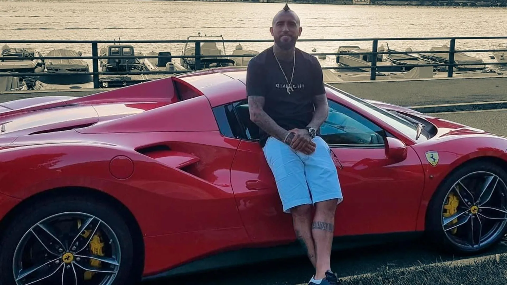

Wilson chamorro, dueño del único taller que arregla autos de lujo en Chile, comentó a EMOL que el Ferrari 458 italiano que conducía el jugador, avaluado en $150 millones de pesos, está en tales condiciones que lo mejor sería declararlo como pérdida total. "Hemos arreglado muchos autos por colisión, que no han sido tan graves como éste eso sí, y han quedado perfecto, señaló Wilson chamorro a Emol, sin embargo, considera que sería una pérdida de esfuerzo y dinero por parte del jugador de la Juventus arreglarlo. Respecto a los costos de la mantención por kilómetraje en los vehículos de lujo, Argomeda menciona que vale aproximadamente medio millón e incluye cambio de aceite y filtros. Respecto al arreglo del auto de Arturo Vidal - si estuviera en mejores condiciones - el experto señala a Emol: "Dos millones es lo qu se maneja en un choque pequeño, sin embargo, el otro día reparamos un ferrari que chocó un árbol, y solamente los repuestos costaron $75 millones, casi la mitad del precio del auto. La compañía de seguro no estaba muy contenta"
